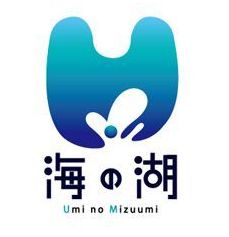
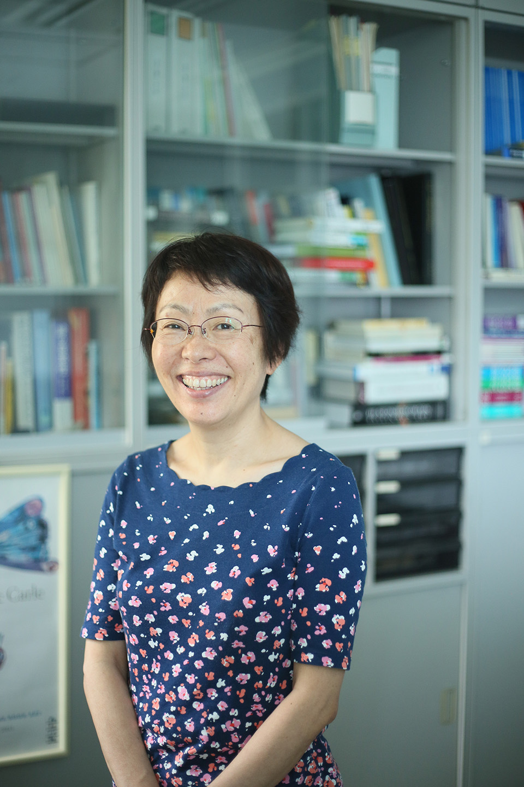
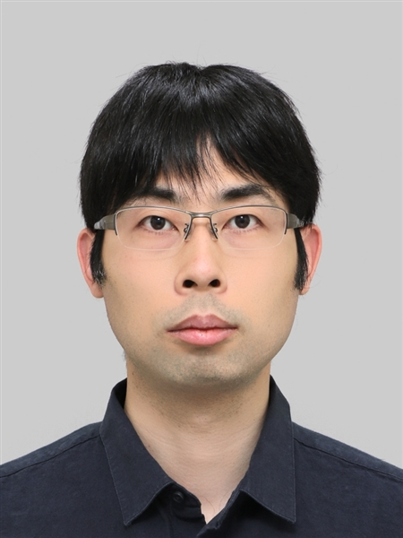

言語処理学会第28回年次大会(NLP2022)
お知らせ
※※※※ 重要 ※※※※- 3月16日に福島県沖で発生した地震で被災された皆様に，心からお見舞い申し上げます．この地震およびその影響で本日の発表ができない場合は，"No show"とは考えず，発表したものとみなし，他の発表と同様に後日，論文も一般公開します．
開催案内
言語処理学会第28回年次大会（NLP2022）は，2022年3月14～18日の期間，5日間の日程で開催いたします．
Zoom/Gather/Slackを利用して，会期中のすべてのプログラムにオンラインで参加し，発表・聴講・議論することが可能です．
○ 大会Twitterアカウント（@nlp2022）
https://twitter.com/nlp2022
年次大会に関する情報発信・ご意見・ご感想などには ハッシュタグ #NLP2022 をご利用ください．
開催日
2022年 3月14日（月）- 3月18日（金）
| チュートリアル，スポンサーイブニング | |
| 本会議 第1日 | |
| 本会議 第2日，オンライン懇親会 | |
| 本会議 第3日 | |
| ワークショップ |
参加者限定サイト
参加者限定サイト (要パスワード．パスワードは，参加登録された方にお送りしている「参加登録手続き完了のお知らせ」のメールに記載されています．）会場
-
会場： アクトシティ浜松 コングレスセンター -
所在地： 〒430-7790 静岡県浜松市中区板屋町111-1
-
https://www.actcity.jp/
【参加者の皆様はオンラインでご参加ください】
参考：大会参加オプショナルガイド
主催
後援・協賛
| 後援： 国立大学法人 静岡大学 |
| 協賛： 浜松・浜名湖ツーリズムビューロー  |
スポンサー
冠スポンサー：プレミアムスイーツ
| Megagon Labs |
冠スポンサー：スポンサー賞
大会の発表論文に対して，スポンサーが独自に賞を授与します．今大会での授賞は５件です．受賞者（発表論文）は，本会議最終日（3月17日）のクロージングで発表されます．授賞予定スポンサーは，下記の通りです（申し込み順）．
| 株式会社LegalForce |
| NEC |
| 株式会社サイバーエージェント |
| 富士通株式会社 |
| Japan Digital Design 株式会社 |
プラチナスポンサー
ゴールドスポンサー


シルバースポンサー


第28回年次大会 発表募集
スケジュール
| 大会発表申込受付開始 |
|
|
| 大会発表申込・論文原稿締切 |
|
|
発表申込
発表申込・原稿提出は締め切りました．大会発表要項はこちらです．発表申込・原稿提出・大会発表各要項にある発表申込サイトへのリンクから発表申込ができます．発表申込と同時に論文原稿（PDFファイル）を提出する必要があります．発表申込・原稿提出の締切は2022年1月14日（金）午後3時です．締切を過ぎてからの申込や変更は一切できませんのでご注意ください．
一般セッションへの発表申込には，発表者が言語処理学会正会員または学生会員であることが必要です（入会はこちらから）．テーマセッションへの発表申込の場合は会員資格の有無を問いません．
ワークショップへの発表申込は，こちらのサイトからはできません．各ワークショップのWebサイトをご覧ください．
発表申込・原稿提出・大会発表に関する問い合わせ
プログラム委員会・大会委員会
Email: nlp2022-inquiry (at) ml.anlp.jp
参加登録
当大会での発表，聴講，企画等の参加には事前登録または直前登録による参加登録が必要です．以下の点にご注意ください．
-
参加登録：
- 事前登録の受付は2月14日（月）で終了しました．
- 事前登録の受付は2022年 1月11日（火）から開始しています．登録および入金を2月14日（月）までにお済ませください． 期限までに入金されていない場合，原則として事前登録は無効となりますのでご注意ください．参加費のお支払いには郵便振替とクレジット決済をご利用いただけます．
- 直前登録の受付は3月11日（金）正午で終了しました．
- 直前登録は，2月24日（木）から3月11日（金）正午まで，クレジット決済のみで受け付けます．
- 会期中の登録はお受けできませんのでご注意ください．当日の現金払いは一切受け付けません．
-
会員適用：事前登録・直前登録とも，学会の会員データベースと「連動」して会員価格適用等を判断しています．会員価格の適用のためには，以下の点にご注意ください．
- 既に会員の方：原則，2022年度会費を納入いただいている必要があります．
-
新規入会される方：会員価格を適用するために学会に新規入会される方は，参加申し込みの前に入会手続きと会費の納入をお願いします．事務局による会員データベースへの登録と年会費の入金確認が完了した時点で会員として参加登録可能になります．手続きには2週間程度の時間を要することがある点にご留意ください．
言語処理学会入会案内: https://www.anlp.jp/guide/admission.html
登録サイト
参加登録の受付はすべて終了しました．
参加費
会員種別，申込時期によって，以下の参加費をいただきます．［特定商取引法に基づく表示］
| 事前登録 | 直前登録 | |||
|---|---|---|---|---|
| 一般会員 | 8,000円 |
※1 | 12,000円 |
※1 |
| 学生会員 | 3,000円 |
※1 | 6,000円 |
※1 |
| 賛助会員 | 8,000円 |
※1 | － | |
| 非会員 |
18,000円 |
※2 | 25,000円 |
※2 |
| 非会員 |
6,000円 |
※2 | 9,000円 |
※2 |
※1 ... 不課税，※2 ... 税込
- チュートリアルやワークショップのみ参加する場合も，参加費は同額です．
- スムーズな運営のため，できるだけ，事前登録をお願いします．
- 賛助会員価格（割引）は，事前登録のみ設定します．
- オンラインでの参加・現地参加ともに参加費は同額です．
- 一般会員・学生会員に限り，注意事項や条件にご同意の上，事前登録の際に現地での参加希望を出すことができます．現地参加の可否は事前登録期間終了後に抽選により決定し，ご連絡します．その際，発表者等を優先する場合があります．早めの確定が必要な方は，オンラインでの参加をお勧めします．
- 領収書はWeb上で発行し，メールにてリンクをご連絡いたします．参加費と名産品オプションの分の領収書が別に発行されます．
- プログラムや実施形態に変更が生じた場合，また，何らかの事由で通信に不具合があった場合でも，参加費の返金はいたしかねます．ご了承ください．
問い合わせ先
参加手続きや支払いに関する問い合わせは，下記にお願いいたします．
参加登録システムサポートデスク
Email: nlp2022regist [at] nacos.com
大会プログラム
こちらのページをご参照ください．
招待講演
招待講演を２件，行います．
3月15日（火）：自然言語を複雑系として捉える試み
講演日時：3月15日（火）9:30-10:30
講演者：田中 久美子 先生（東京大学）
- 概要：
- かつての自然言語処理では，単語や構文など，自然言語の部分を解析し，その複合的な組み合わせとして，機械翻訳など大規模な応用システムを構成していた．このような自然言語処理を支える科学として，言語の部分の特性を記述する言語学は，重要な役割を担っていた．一方，今日の深層学習による言語処理は，言語を包括的に処理する．言語は全体論的システムであるという考え方は古くからあるが，今日のこの工学を支え得る操作性を持つ形式での，言語のデータ科学は整理されてはおらず，未だ発展途中にある．本講演では，そのような言語のデータ科学の方法論の可能性の一つとして，「複雑系」として言語を捉える見方を挙げる．本講演では，その見方の背景にある考え方を論じ，その上で，現在の研究フロンティアを概観し，言語処理に対する意義を考える．
- 略歴：
- 東京大学先端科学技術研究センター教授．東京大学大学院工学系研究科情報工学専攻博士課程修了，博士（工学）．工業技術院電子技術総合研究所，東京大学大学院情報学環講師， 東京大学大学院情報理工学系研究科准教授，九州大学システム情報科学研究院教授を経て，現職．自然言語や記号系に普遍に内在する数理構造に興味を持つ．
3月16日（水）：自然言語処理研究が乳幼児の言語発達研究から学べることは何か
講演日時：3月16日（水）17:20-18:20
講演者：馬塚 れい子 先生（理化学研究所／Duke University）
- 概要：
- ヒトの乳幼児が母語を自然に獲得していく過程は，成人が外国語を学ぶ過程とは大きく異なるが，言語を「母語」として獲得するためには幼児期からの習得が必須であることから，言語は幼少期から学んだほうが良いと考えられることが多い．しかし，成長に伴う認知，運動，実行機能などの能力向上や習得された知識量の増加に伴い，言語を「学習する能力」が向上し，幼少期と学び方は違うが「実際に使える言語能力」は年齢が上がるほど高くなることはあまり知られていない．本講演では，乳幼児と成人の言語習得過程の違いを具体的に比較し，言語は若いうちから獲得する方が有利であるというのは誤解である部分が多いことを示す．さらに，ヒトの言語処理過程と計算機上での言語処理モデルとの関係も，脳の構造的限界や神経活動の特性に最適化するよう進化してきたヒトの言語処理過程と，計算機の容量や処理スピードに依存して進化してきた自然言語処理モデルの比較として考えると興味深い共通性が見られることを示す．
- 略歴：
- 名古屋大学文学部心理学研究科修士，エジンバラ大学言語学科MSc，コーネル大学発達心理学PhD．職歴，Duke University Department of Psychology & Neuroscience Assistant Professor, Associate Professor，2004年に理研脳科学研究センターで言語発達チームをスタート．
チュートリアル
3月14日（月）午後に，４件のチュートリアルを行います．チュートリアル資料は，参加者限定サイトの中で公開しています（参加者限定サイト閉鎖まで限定公開）．
チュートリアル１：項目反応理論と自然言語処理
講演日時：3月14日（月）13:00-14:45
講演者：江原 遥 先生（東京学芸大学）
- 概要：
- 項目反応理論（Item Response Theory, IRT）は，何らかの試験結果データから「能力」や「難易度」を自動的に推定する場面などで用いられる複数のモデルの総称であり，近年は自然言語処理のシステム評価などの論文でも活用される機会が増えている．項目反応理論は，例えば，能力と難易度が相互に比較可能な尺度になっていてその差に意味があるなど，「能力」や「難易度」といった自然言語処理でも使いたくなる場面の多い概念に対して，それらが持っているべき性質を考えたうえでモデルが設計されているため，モデリングの参考になる．さらに，項目反応理論の一部は，ニューラルモデルとしても記述できるので，近年のニューラルな自然言語処理のモデルとも親和性が高い．本チュートリアルでは，項目反応理論が能力や難易度についてどのような性質を仮定しているのかからはじめ，近年の自然言語処理分野の項目反応理論を活用した論文を参考にしつつ，項目反応理論のニューラルモデルへの組み込みなどの展望を議論する．
チュートリアル２：ゼロから始める転移学習
講演日時：3月14日（月）13:00-14:45
講演者：柴田 知秀 先生（ヤフー株式会社）
- 概要：
- 2018年のGoogleのBERTを始めとする手法で転移学習の枠組みが大成功し，自然言語処理や近接分野の考え方を大きく変えた．ここでいう転移学習は，大規模なテキストを用いて自己教師あり学習で学習する事前学習と，下流タスクが解けるように学習するファインチューニングの2ステップからなる．これまでの自然言語処理技術の積み重ねの理解が必要なことと近年の研究の流れの速さから，自然言語処理初学者はもちろんのこと，自然言語処理研究者でも理論を正確に理解するのは難しい．本チュートリアルでは，初学者の方でも理解できるように，背景となる技術から説明し，転移学習の枠組みや最近の研究動向について説明する．また，理論を理解することと実際使いこなせることのギャップをうめられるように，ライブラリの動かし方などにも触れる．
チュートリアル３：ボケとツッコミの言語学～漫才研究が照らす日常会話のメカニズム
講演日時：3月14日（月）15:15-17:00
講演者：岡本 雅史 先生（立命館大学）
- 概要：
- 本チュートリアルでは，漫才の「ボケ」と「ツッコミ」を言語学，特に語用論と認知言語学の視点から分析することで，一見すると特殊な発話タイプに過ぎないものと思われがちな両者が，実際には日常会話の一貫性や思考の対話的構造を解き明かすヒントを与えてくれることを解説する．周知のように，漫才はボケとツッコミという二つの異なるタイプの発話を組み合わせることによっておかしみを生み出す話芸である．従来はそうしたおかしみがなぜ生じるのかについての研究が主であったが，そもそも「ボケ」は何をボケているのか，そして「ツッコミ」は何に対してツッコんでいるのか，に着目すると，日常会話における「他者への反応」がなぜこれほどまでに多層化・多元化するのかという問題系に繋がる．本チュートリアルではこの点に焦点を置き，漫才と日常会話の連続性，さらにはコミュニケーションと認知の相互的関係について，豊富な具体例を交えながら解説する．
チュートリアル４：最適輸送と自然言語処理
講演日時：3月14日（月）15:15-17:00
講演者：横井 祥 先生（東北大学）
- 概要：
- いくつかの工場で作った特産品を市内の土産物店に届けたいとき，各工場から各土産物店にそれぞれどれだけの数の特産品を運べばもっとも効率的だろうか？最適輸送理論は，荷物の配置換えの最小コストとこれを実現する輸送プランを求める枠組みである．強固な数学的土台を持ちまた計算技法の開発も進んだことから，今日では機械学習や画像処理などの多くの分野で点群や確率分布の違いを測る際に積極的に採用される道具となっている．深層学習や埋め込み表現との相性がよくまたアラインメントの情報（どの工場とどの土産物店を結ぶべきか）が分かることから，自然言語処理分野での利用例も一気に増えてきた．たとえば文と文の類似度を求める問題を「単語ベクトル集合を別の単語ベクトル集合に移し替えるコストは？」と読み替えればこれは最適輸送の問題に見えてくる．あるいは対訳辞書を作る問題も，埋込空間における日本語ベクトル全体（工場群）と英語ベクトル全体（土産物店）の間の良いアラインメント（輸送計画）を求める問題だと思えばやはり最適輸送を適用したくなってくる．本チュートリアルでは，ワッサースタイン距離とも呼ばれる古典的な最適輸送コストからその様々な拡張手法までを概観し，これらを視覚的に理解することを目指す．また，手元の問題に最適輸送を利用できるかを判断するための指針を与え，有用なアルゴリズムと既存ライブラリをあわせて紹介する．講演全体を通して，最適輸送が自然言語処理の幅広い問題に簡単に適用できる強力な枠組みであることをお伝えしたい．
テーマセッション
本会議内に以下の４件のテーマセッションを設けます．発表申込方法は本会議内の一般セッションと同じです．開催日時は，大会プログラムをご覧ください．
テーマセッション１：論文情報処理と論文執筆支援
| 提案者 |
| 成松 宏美（NTT） |
| 杉山 弘晃（NTT） |
| 堂坂 浩二（秋田県立大学） |
| 南 泰浩（電気通信大学） |
| 平 博順（大阪工業大学） |
| 大和 淳司（工学院大学） |
| 東中 竜一郎（名古屋大学／NTT） |
| 松原 茂樹（名古屋大学） |
| 相澤 彰子（国立情報学研究所） |
| 森 純一郎（東京大学） |
| 進藤 裕之（奈良先端科学技術大学院大学） |
| 松本 裕治（理化学研究所） |
趣旨
学術論文の数は日々増えている．これらの学術論文を我々の知見として役立てるためには，論文から知識を抽出し，有機的にその知識をつなげ，新たな知識として利用可能な形にする技術が必要である．論文を執筆する研究者にとっては，日々増える論文情報から関連する研究を見つけ，全てに目を通し，過不足なく引用するという一連の流れを行うことが求められるが，その量の膨大さゆえに，困難さは日々増している．これらの問題意識はWebが発展した当初からあり，研究動向の把握，適切な引用文献の把握，および妥当な比較対象の選定など，研究の遂行から査読といったあらゆるフェーズで研究者をサポートするための技術が提案されてきた．しかしながら，未だ実運用に至る高精度なシステムは実現されていない．本テーマセッションでは，論文からの知識抽出や論文執筆支援など論文の情報処理に関わる研究者が一同に介する場を提供し，方法論，データセット，評価手法，今後の論文情報に関わる言語処理技術の方向性や問題意識の共有などを行う．
テーマセッション２：文章の評価と品質推定
| 提案者 |
| 須藤 克仁（奈良先端科学技術大学院大学） |
| 小町 守（東京都立大学） |
| 梶原 智之（愛媛大学） |
趣旨
機械による言語生成技術の進展に伴い，人手評価，参照文と比較しての自動評価，参照文を用いない自動品質推定の手法に注目が集まっている．機械が生成する文章と人間が書く文章は，同様に評価や品質推定が可能な対象であると考えられるが，その観点，基準の厳しさ，難易度には大きな隔たりがある．人間の書いた文章の評価・品質推定では文章構成や文脈の考慮が不可欠であると認識されている一方で，機械が生成する文章に対しては依然として表層的，あるいは単文単位での評価や品質推定が中心である．本テーマセッションではその違いを意識した上で，文章の評価・品質推定についての知見や技術について幅広く発表を募り，様々な立場から我々が今後目指していく方向について議論を深めることを目指す．
テーマセッション３：言語処理テクノロジーと翻訳：翻訳の要請から技術へ，技術から翻訳応用へ
| 提案者 |
| 藤田 篤（情報通信研究機構） |
| 山田 優（立教大学） |
| 影浦 峡（東京大学） |
趣旨
機械翻訳（MT）と人間による翻訳（以下単に翻訳）では，行われていることが異なる．MTは，起点言語テキストと目標言語テキストの変換を言語的プロセスと見なしているが，翻訳は言語的プロセスをふまえつつ多様な要因を考慮して遂行される．例えば，翻訳において，起点言語文書（SD）の属性を同定しそれに対応した翻訳の仕様を定義すること，SDの中で特定のタイプの要素に対して特定の扱いをすること，特定の扱いをするために，文書に応じたリソースを翻訳プロセスの初期に構築することは，当たり前に行われている．目標言語文書（TD）の品質を評価する際にも，MQMのような一般的な評価基準だけでなく，特定の関連文書群との関係をチェックすることなども行われる．MTでは考慮されず，翻訳では行われているこうした行為に，MT以外の言語処理技術が応用できる可能性は低くない．しかしながら，技術側からは翻訳側の要求仕様が，翻訳側からは技術的可能性の現状が十分に把握されていない状況があるため，その可能性は十分に現実化していない．
こうした状況を踏まえ，前回の年次大会において，提案者らは，翻訳プロセスの明確化とそれをふまえたMTを含む技術的課題の共有を目指すテーマセッションを設けた．発表と総合ディスカッションを通して一歩，翻訳論・翻訳実務コミュニティと言語処理コミュニティの相互理解は進んだが，今回はさらに一歩踏み込んで，翻訳プロセスの要素に対する具体的な技術的要請，MTに限らない技術の翻訳プロセスにおける具体的な応用をめぐる発表を募集し，それを踏まえて，翻訳の技術的明確化と言語処理技術の翻訳応用のあり方を，言語処理側で定義するMTや多言語応用を超えて議論し共有することを目的とする．
テーマセッション４：談話研究と対話システム研究，人工知能研究の連携に向けて
| 提案者 |
| 宇佐美 まゆみ（国立国語研究所） |
| 片上 大輔（東京工芸大学） |
| 東中 竜一郎（名古屋大学） |
趣旨
これまで言語系の談話研究においては，対話相手による言葉遣いの違い，円滑なコミュニケーションのためのストラテジーとしてのポライトネス理論，話題の展開などの観点から，会話という人間の相互作用に関する様々な研究がなされてきた．一方，工学系における対話システムの研究においては，ライブコンペティションが4回目を迎えるなど目覚ましい発展を示しているものの，ポライトネス・ストラテジーや文末のスピーチレベルの違いや使い分けが，人に与える印象や人間関係構築にもたらす効果等を考慮するところまでは至っていない．本セッションでは，言語系，工学系双方からの広義の「会話・対話」に関する研究を募り，相互交流の場とすることによって，双方の分野における最新の研究知見を生かした対話型エージェントやロボットなどの人工知能システムの構築に関する議論を行うことを目的とする．工学系の対話システム研究はもちろんのこと，言語系の談話研究，語用論に関する発表を歓迎し，相互交流の促進を企図するとともに，言語系中心の語用論，談話研究に関する学会に参加する機会がとれない工学系の研究者への情報提供の場とすることも目指したい．
本テーマセッションの前身は，2019年，第25回大会で行ったが，言語系5件を含む全11件の発表があり，議論が盛り上がった．その後の展開に期待したい．
ワークショップ
3月18日（金）に，以下２件のワークショップがオンラインで開催されます．ワークショップの内容・発表方法等，詳細は，それぞれのワークショップの提案者が開設するWebサイトをご覧ください．
ワークショップ１：ＮＬＰにおける再現性
| 提案者 |
| 賀沢 秀人（グーグル合同会社） |
| 高瀬 翔（東京工業大学） |
| 清野 舜（理化学研究所／東北大学） |
| 伊藤 拓海（東北大学／Langsmith） |
| Webサイト |
| https://sites.google.com/view/reproducible-nlp-ws |
趣旨
実験の再現性は健全な議論のために不可欠の条件である．しかし，近年，ＮＬＰで扱われるデータ量やそれを処理するための計算コストが著しく増加し，実験の再現性を検証することが困難になってきている．また，現実問題として，著名な国際会議では（改善の動きは見られるものの）依然として新規性が採録の基準として重要視されるため，限られた研究リソースの配分先として，報告された内容の検証よりも，新しい手法や分野の研究が選ばれることも多い．こうした状況を踏まえ，本ワークショップでは，ＮＬＰにおける再現性について幅広く知見を集め議論する場を提供したい．
ワークショップ２：日本語における評価用データセットの構築と利用性の向上
| 提案者 |
| 浅原 正幸（国立国語研究所） |
| 河原 大輔（早稲田大学） |
| 久保 隆宏（アマゾンウェブサービスジャパン合同会社） |
| 柴田 知秀（ヤフー株式会社） |
| 高岡 一馬（株式会社ワークスアプリケーションズ・エンタープライズ） |
| 林部 祐太（株式会社リクルート Megagon Labs） |
| 久本 空海（株式会社Legalscape） |
| 松田 寛（株式会社リクルート Megagon Labs） |
| Webサイト |
| https://jedworkshop.github.io/jed2022 |
趣旨
日本語NLP技術の性能評価のためのデータセットが近年いくつか公開されているが，他の言語と比べると基本的なタスクが不足しており，日本語NLPの迅速な発展を阻害する要因となっている．英語などのデータセットを日本語に翻訳するアプローチもあるが，翻訳プロセスに由来するアーティファクトや文化の相違に起因するバイアスにより品質劣化が生じる場合が多いため，最初から日本語で構築したデータセットが増えていくことが望ましい．
本ワークショップでは，日本語における評価用データセットの構築手法そのものに加えて，データセットの公開方式・利用性の高い著作権設定・タスクの複合化といった応用を容易にするための研究を集めて議論することで，日本語データセット公開の流れを加速し，日本語NLP業界全体のさらなる発展および生産性向上につなげていきたい．また，データセットによる評価の対象として利用されることが多い事前学習モデルについても，その構築過程で得られたノウハウを共有しデータセット構築に活用するためのセッションを設けて議論を深めることで，日本語データセットと事前学習モデルの相補的な発展につなげていきたい．
Slackワークスペース
Slackワークスペースは閉鎖しました．
参加者同士やスポンサーとのコミュニケーションにご利用ください．詳細は参加者限定サイトをご参照ください．会期前から使用できますので，事前の議論・案内等にもご活用ください．
予稿集
予稿集を一般公開しました．
参加者限定サイトに予稿集・チュートリアル資料を限定公開しました．
また，予稿集は大会終了後（4月頃）に一般公開します．
表彰
表彰一覧
第28回年次大会の表彰一覧はこちらです（授賞理由を追記しました）．
優秀賞・若手奨励賞
特に優れた論文には，優秀賞，若手奨励賞を授与します．言語処理学会年次大会の規定をご覧ください．
若手奨励賞は，
「年次大会の開催年の4月1日において満30歳未満のもの」
を対象とし，主に当該研究論文と第1著者の将来性を評価し，第1著者（人）に対して贈られる賞です．
選考対象者は以下の要件に該当する必要があります：
- 2022年4月1日において満30歳未満のもの
- 過去に若手奨励賞を受賞していないこと
- 口頭・ポスター発表を問わず，”No Show” でないこと
対象者に該当する方は，発表申込の際にその旨申告していただきますようお願いします．
- 注1：授賞対象は第1著者のみで，第2著者以降の共著者は授賞対象に入りません．
- 注2：稀なケースとして，同年に同一第1著者の2つ以上の論文が若手奨励賞に選出された場合，当該複数論文を併記の上，一回のみ授賞することになります（論文ではなく第1著者に対する賞という理念に基づく措置）．
言語資源賞
年次大会で発表され，優れた言語資源を作成したと認められる論文に対して言語資源賞を授与します．言語資源賞は優秀賞や若手奨励賞とは独立に選考します．独自に開発したコーパス，ツールなどに関する論文のご投稿をお待ちしております．なお，同賞は言語処理学会と言語資源協会（GSK）との共同事業です．
参考: 言語資源賞について（GSKホームページ）
委員特別賞
前回大会に引き続き，15件程度の発表論文を「委員特別賞」として大会委員長名義で表彰します．「新規性」や「有用性」に関連する観点を審査員が独自に設定し，それらの観点で光るものを選出する方針です．受賞者（発表論文）は，本会議最終日（3月17日）のクロージングで発表します．
スポンサー賞
大会の発表論文に対して，スポンサーが独自に賞を授与します．今大会での授賞は５件です．受賞者（発表論文）は，本会議最終日（3月17日）のクロージングで発表されます．授賞予定スポンサーは，下記の通りです（申し込み順）．
| 株式会社LegalForce |
| NEC |
| 株式会社サイバーエージェント |
| 富士通株式会社 |
| Japan Digital Design 株式会社 |
優秀賞・若手奨励賞審査員
248名の方に大会賞審査にご協力いただきました．（受賞論文はこちら）
大会賞審査員（氏名の公表に同意いただいた方のみ．順不同）：
| 小木曽 智信 | 五十嵐 陽介 | 石川 慎一郎 | |
| 田中 リベカ | 柏野 和佳子 | 寺井 あすか | |
| 中川 奈津子 | 難波 英嗣 | 金丸 敏幸 | |
| 近藤 泰弘 | 近藤 悠介 | 藤田 早苗 | |
| 荻野 綱男 | 荻野 紫穂 | 荒木 雅弘 | |
| 竹内 孔一 | 神崎 享子 | 白井 清昭 | |
| 田森 秀明 | 田中 貴秋 | 田中 牧郎 | |
| 浅原 正幸 | 栗林 樹生 | 村上 浩司 | |
| 本多 右京 | 木山 幸子 | 川崎 義史 | |
| 山本 和英 | 小原 京子 | 大関 洋平 | |
| 千葉 庄寿 | 北村 雅則 | 加藤 恒昭 | |
| 内田 ゆず | 黒田 航 | 永田 亮 | |
| 横野 光 | 原島 純 | 加藤 祥 | |
| 内海 彰 | 伊藤 薫 | 中村 誠 | |
| 丁 塵辰 | 馬 青 | 江里口 瑛子 | |
| 宇田川 拓真 | 井之上 直也 | 上垣外 英剛 | |
| 佐々木 稔 | 重藤 優太郎 | 船越 孝太郎 | |
| 矢田 竣太郎 | 玉岡 賀津雄 | 松林 優一郎 | |
| 東中 竜一郎 | 村上 聡一朗 | 斉藤 いつみ | |
| 品川 政太朗 | 吉野 幸一郎 | 古宮 嘉那子 | |
| 鶴岡 慶雅 | 高橋 哲朗 | 高村 大也 | |
| 駒谷 和範 | 須藤 克仁 | 鈴木 久美 | |
| 野本 忠司 | 赤間 怜奈 | 賀沢 秀人 | |
| 西田 典起 | 菊池 悠太 | 若宮 翔子 | |
| 臼田 泰如 | 竹澤 寿幸 | 竹内 和広 | |
| 稲葉 通将 | 稲熊 寛文 | 秋葉 友良 | |
| 福田 悟志 | 石野 亜耶 | 石岡 恒憲 | |
| 相澤 彰子 | 田村 晃裕 | 狩野 芳伸 | |
| 牛久 祥孝 | 濱崎 雅弘 | 清田 陽司 | |
| 清丸 寛一 | 永田 昌明 | 水野 淳太 | |
| 水本 智也 | 水上 雅博 | 武田 浩一 | |
| 橋本 泰一 | 梶原 智之 | 根本 啓一 | |
| 栗田 修平 | 柴田 知秀 | 柏岡 秀紀 | |
| 松本 裕治 | 東山 翔平 | 村田 真樹 | |
| 村岡 雅康 | 杉山 弘晃 | 木村 泰知 | |
| 新里 圭司 | 新納 浩幸 | 斎藤 博昭 | |
| 持橋 大地 | 徳久 良子 | 延澤 志保 | |
| 嶋田 和孝 | 岸田 和明 | 岡崎 直観 | |
| 山田 育矢 | 山田 康輔 | 山田 一郎 | |
| 山口 昌也 | 尾上 康雅 | 小田 悠介 | |
| 小林 颯介 | 小林 悟郎 | 小川 泰弘 | |
| 小島 熙之 | 寺西 裕紀 | 大野 誠寛 | |
| 大竹 清敬 | 大熊 智子 | 堂坂 浩二 | |
| 坪井 祐太 | 坂口 慶祐 | 土田 正明 | |
| 土屋 雅稔 | 吉見 毅彦 | 吉田 光男 | |
| 吉永 直樹 | 吉川 克正 | 南條 浩輝 | |
| 北岡 教英 | 内山 清子 | 佐藤 志貴 | |
| 伊東 伸泰 | 井上 昂治 | 乙武 北斗 | |
| 丸山 岳彦 | 中澤 敏明 | 中島 伸介 | |
| 中岩 浩巳 | 三田 雅人 | 高瀬 翔 | |
| 飯田 龍 | 関根 聡 | 鈴木 潤 | |
| 金水 敏 | 清野 舜 | 江原 遥 | |
| 水本 篤 | 横井 祥 | 影浦 峡 | |
| 平尾 努 | 岩山 真 | 小町 守 | |
| 富士 秀 | 奥村 学 | 吉田 稔 | |
| 内田 諭 | 内海 慶 | 光田 航 | |
| 三輪 誠 | 乾 健太郎 | 黃 尹柔 | |
| 関 和広 | 榊 剛史 | 林 良彦 | |
| 張 培楠 | 奥 健太 | 塙 一晃 | |
| 乾 孝司 | 潮 旭 | Hiroaki Hayashi | |
| Chunpeng Ma | Chenhui Chu | Benjamin Heinzerling | |
| 那須川 哲哉 | 小比田 涼介 | 宇津呂 武仁 | |
| 佐々木 翔大 | 阿辺川 武 | 越前谷 博 | |
| 佐々木 裕 | 井佐原 均 | 櫻井 成一朗 | |
| 高岡 一馬 | 酒井 哲也 | 西田 京介 | |
| 藤田 桂英 | 萩行 正嗣 | 菊池 英明 | |
| 綱川 隆司 | 笹野 遼平 | 笠井 淳吾 | |
| 福本 文代 | 石本 祐一 | 渡辺 太郎 | |
| 河原 大輔 | 江原 暉将 | 松本 和幸 | |
| 松崎 拓也 | 村脇 有吾 | 後藤 功雄 | |
| 平岡 達也 | 岩倉 友哉 | 宮尾 祐介 | |
| 安藤 真一 | 吉田 康久 | 吉村 賢治 | |
| 吉川 将司 | 吉岡 真治 | 内山 将夫 | |
| 内元 清貴 | 亀甲 博貴 | 中川 哲治 | |
| 三浦 康秀 | 金山 博 | 藤田 篤 | |
| 菅原 朔 | 能地 宏 | 白松 俊 | |
| 森田 一 | 森下 睦 | 岡田 真 | |
| 増市 博 | 塚田 元 | 二宮 崇 | |
| 欅 惇志 | Kevin Duh | Hiromitsu Nishizaki | |
| Fei Cheng | 石垣 達也 | 安達 久博 | |
| 宮田 玲 | 南 泰浩 | 金子 正弘 | |
| 小磯 花絵 | 坂地 泰紀 | 大内 啓樹 | |
| Sheng Li | 林部 祐太 |
スポンサーイブニング（オンライン開催）
「スポンサーイブニング」をオンラインで開催します．冒頭ではスポンサーから参加者のみなさん（特に学生のみなさん）に一言メッセージをお送りします．お気軽にご参加ください．「スポンサーイブニング」の概要は以下の通りです．
- 日時
- 2022年 3月14日（月）17:30-（チュートリアル終了後）
- ※事前申し込みなどは必要ありません．当日，直接ご参加ください．
- 内容
- 17:30- Zoomにて、スポンサーイブニング開会
- 17:35- スポンサーのメッセージトーク（30秒ずつ）
- メッセージトーク終了後，Gather各会場のスポンサーオンライン展示ブースへ移動，スポンサーの方と参加者との間で自由に対話していただきます（自由解散）．
- 参加資格
- 大会参加者であればどなたでも参加できます．
- オンライン展示出展スポンサー
- Yahoo! JAPAN
- 株式会社アドバンスト・メディア
- 株式会社デンソーアイティーラボラトリ
- 株式会社サイバーエージェント
- LINE株式会社
- 株式会社pluszero
- 国立国語研究所
- 富士フイルム株式会社
- 富士通株式会社
- 楽天グループ株式会社
- 国立研究開発法人情報通信研究機構
- Simeji
- マイクロソフトディベロップメント株式会社
- Japan Digital Design 株式会社
- 株式会社みらい翻訳
- ちゅらデータ株式会社
- アマゾン ウェブ サービス ジャパン合同会社
- 株式会社東芝
- Sansan株式会社
- 株式会社Insight Tech
- 株式会社ワークスアプリケーションズ・システムズ
- 株式会社Legalscape
- 株式会社NTTドコモ
- 株式会社エクサウィザーズ
- 読売新聞東京本社
- 株式会社メルカリ
- 一般社団法人アジア太平洋機械翻訳協会
- 株式会社JX通信社
- Fairy Devices株式会社
- 以上29団体全てが，Zoomでのオープニングに登壇します（登壇順もこの並びの通り）．
- 参加する学生の方は，ぜひ，気になるスポンサーのブースを積極的に訪問してください．このイベントをきっかけに，スポンサーと学生との交流が少しでも増えれば幸いです．
オンライン懇親会
3月16日（水）19:00-21:00に，オンライン懇親会を行う予定です．オンライン懇親会ではNLP2021同様，主にGatherを利用します（最初にZoomで全体の挨拶やGatherについての簡単な説明を短時間行います）．Gatherでは参加者が自由に移動でき，参加者同士で会話ができます．オンラインでの開催ですが，コロナ前と同じように，いろいろな参加者と議論したり，雑談をしたりできる場となることを期待しています．また今回の新たな試みである「名産品配送企画」の内容ご紹介，同冠スポンサーのご登壇も予定しています．「名産品配送企画」を申し込まれた方はぜひ届いた「名産品」を持ってご参加ください（通販サイトも「大会参加オプショナルガイド」にてご紹介しております）．皆さまからの多数の参加をお待ちしております．
名産品配送企画
現地参加でもオンライン参加でも，ご参加の皆様でひとつの大会に参加している感覚を共有したく，「一体感」と「現地感」を高めるための一助として，静岡の名産品（茶菓）の配送を数量限定で企画しております．
プレミアムスイーツとしてご案内するのは，静岡抹茶で有名な「ななや」さんのお菓子とお茶（ティーバッグ）の詰め合わせです．プレミアムスイーツ冠スポンサーであるMegagon Labs様のご支援により，特別割引価格で常温配送いたします．
名産品配送企画のお申し込みは2月14日（月）で終了しました．
価格は以下の通りです。
・プレミアムスイーツ（数量限定・先着150名まで・学生以外） :
税込価格 1,620円
（商品価格1,500円+消費税120円・送料サービス）
・プレミアムスイーツ（数量限定・先着150名まで・学生） :
税込価格 1,080円
（商品価格1,000円+消費税80円・送料サービス）
※返品について
NLP2022事前参加登録後はプレミアムスイーツを含めた全てのオプションについてお申し込み内容の変更・キャンセルはできません。
詳細は「NLP2022 大会参加ガイド - 懇親会
名産品オプションについて」をご参照ください．
ぜひお申し込みをご検討いただき，オンライン懇親会にお持ち寄りくだされば幸いです．なお，名産品のお申し込み・お支払いは事前参加登録と同時になります．
冠スポンサー：プレミアムスイーツ
第28回年次大会 スポンサーの募集
スポンサー申し込みは締め切りました．
年次大会では，下記の内容でスポンサー企業，団体を募集いたします．
今回，冠スポンサーとして「プレミアムディナー」「プレミアムスイーツ」の新設，オンライン展示での利用サービスの変更など，多くの変更がありますので，お申し込みの前にご確認くださいますようお願い申し上げます．
お申し込みは3月18日（大会最終日）まで承りますが，特典によっては上限数や期限があります．できるだけ早めのお申し込みをお勧めいたします．
スポンサーのランク，料金と特典
スポンサー申し込みは締め切りました．
|
|
|
|
|
|---|---|---|---|
| 料金（税込） |
|
|
|
| １）ロゴ（Webのみ） |
|
|
|
| ２）オンライン展示 |
|
|
|
| ３）冠スポンサー |
|
|
|
| ４）Slackチャンネル開設 |
|
|
|
| ５）リツイート |
|
|
|
| ６）大会参加（オンライン） |
|
|
|
※追加料金をいただきます（特典の説明文をご覧ください）
※本体価格と消費税額（10％）が明確になるよう，料金を改定いたしました．有料特典についても同様です．ご了承ください．
※冠スポンサーは「プレミアムディナー（新設）」「プレミアムスイーツ（新設）」「スポンサー賞」の3種です．内容は特典の説明文をご覧ください．
※今大会でも，開催形態を考慮し，従来参加者全員に配付していたプログラム冊子は作成いたしません．よって，冊子への広告・ロゴ掲載の特典はありません．また，出版社スポンサーは募集しません．
※スポンサーの大会参加はオンラインのみとなります．
特典
スポンサー申し込みは締め切りました．
- 1）ロゴ（Webのみ）
-
年次大会のWebページにおいて，ご希望のリンク先へのリンクを張ったロゴを表示します．ロゴの大きさはスポンサーの種類によって異なります．同じ種類のスポンサー内での表示の順番は，基本的に申し込み順によって決定します．
※参考までに，ロゴは以下のページのように掲載されます．
https://www.anlp.jp/nlp2021/#sponsor
※ロゴとスポンサー名それぞれ別のリンクを張ることも可能です．
- 2）オンライン展示［Gather.Town を利用します］ オンライン展示は締め切りました．
-
年次大会開催中に，オンライン上でブースを設け，展示を行うことができます．前回リクエストを多数いただいたGather.Townで実施し，Zoom のバックアップを準備します．プログラムからリンクさせ，大会参加者が会期中（休み時間やセッション終了後を含む）に常時アクセスできる形を想定しております．
出展には5万5千円（税込）の追加料金をいただきます．
なお，スポンサーイブニング（オンライン開催）の参加にはオンライン展示ブースの確保が必要です（お申し込みが上限数に達するなどして展示ブースの確保ができない場合，スポンサーとしてのスポンサーイブニングへの参加はできません）．
出展のご希望が上限数に達した場合，早めに募集を終了します．先着順であることにご注意ください．
- 3）冠スポンサー［プレミアムディナー・プレミアムスイーツ新設］ 冠スポンサー（プレミアムディナー・プレミアムスイーツ・スポンサー賞）は締め切りました．
-
特定の項目に絞った「冠スポンサー」にお申し込みいただけます．いずれの項目でも，スポンサー名が参加者にわかるように表示・発表いたします．
-
プレミアムディナー・プレミアムスイーツ（いずれも新設）：
「懇親会名産品配送オプション」へのスポンサーです．特典として同梱物へのスポンサーロゴ印刷，グッズ同梱ができます．また，オンライン懇親会にスポンサーとしてご登壇いただけます．他にも特典を検討しております．
プレミアムディナーは88万円（税込），プレミアムスイーツは33万円（税込）の追加料金をいただきます（同梱物は別途実費ですが他に費用は発生しません）．なお，配送品の内容については大会が決定します．
それぞれ，1団体限定の募集です．先着順であることにご注意ください．
-
スポンサー賞：
大会の発表論文に対して，スポンサーが独自に賞を授与できます．
11万円（税込）の追加料金をいただきます．
ご希望が上限数に達した場合，早めに募集を終了します．先着順であることにご注意ください．
-
プレミアムディナー・プレミアムスイーツ（いずれも新設）：
- 4）大会参加者交流用Slackワークスペースでのスポンサーチャンネル開設
-
前回に引き続き，参加者用Slack を開設します．その中に，各スポンサーのチャンネルを作成します．
- 5）大会公式Twitterアカウントによるリツイート
-
スポンサーから言語処理学会年次大会の参加者向けに発信したい内容を，会期中に公式アカウント @NLP2022 がリツイートいたします．
- 6）大会参加（オンライン）
-
ランクごとに決められた人数まで，一般の参加登録なしで，無料で大会にご参加いただけます．前回と同じ人数分をご用意しました．ぜひご活用ください．
スポンサーイブニング（オンライン）の実施
終了しました．
大会初日（3月14日）に行われるチュートリアルの終了後，「スポンサーイブニング」をオンライン開催いたします．
今回は上記「オンライン展示」にお申し込みくださいますとスポンサーとしてご参加（登壇）いただけます．スポンサーから大会参加者へのアピールの場としてご活用いただければと考えております．
スケジュール
| 募集締め切り： |
|
応募先・問い合わせ先
より詳細な募集案内をご用意いたしましたので，ご覧ください．スポンサーの申し込み方法も，同案内の中に記載しております．
不明点など，下記担当までお気軽にお問い合わせください．
言語処理学会年次大会スポンサー募集のご案内（2021年10月26日更新）荒瀬 由紀，荒牧 英治，石川 真奈見，稲益 佐知子
Email: nlp2022-sponsor (at) ml.anlp.jp
委員一覧
大会委員会
-
- 委員長
- 堂坂 浩二
- （秋田県立大）
-
- 副委員長
- 松田 寛
- （リクルート）
-
-

- 実行委員長
- 狩野 芳伸
- （静岡大）
-
-
- プログラム委員長
- 河原 大輔
- （早稲田大）
-
- 渉外
- 荒瀬 由紀
- （大阪大）
-
- 渉外
- 荒牧 英治
- （奈良先端大）
-
- 秘書
- 石川 真奈見
-
- 秘書
- 稲益 佐知子
大会プログラム委員会
-
- 委員長
- 河原 大輔
- （早稲田大）
-
- 副委員長
- 東中 竜一郎
- （名古屋大）
-
- 泉 朋子
- （マイクロソフト）
-
- 榎本 美香
- （東京工科大）
-
-

- 大内 啓樹
- （奈良先端大）
-
-
- 折田 奈甫
- （早稲田大）
-
- 梶原 智之
- （愛媛大）
-
- 亀甲 博貴
- （京都大）
-
- 久保 圭
- （早稲田大）
-
- 黒田 由加
- （三菱UFJリサーチ＆コンサルティング）
-
- 小磯 花絵
- （国語研）
-
- 坂地 泰紀
- （東京大）
-
- 白井 清昭
- （北陸先端大）
-
- 寺岡 丈博
- （拓殖大）
-
- 永田 亮
- （甲南大）
-
- 林部 祐太
- （リクルート）
-
- 原島 純
- （クックパッド）
-
- 萩行 正嗣
- （ウェザーニューズ）
-
- 増村 亮
- （NTT）
-
- 光田 航
- （NTT）
-
- 峯島 宏次
- （慶應大）
-
- 宮田 玲
- （名古屋大）
-
- 谷中 瞳
- （東京大）
-
- 若宮 翔子
- （奈良先端大）
-
- アドバイザ
- 鈴木 潤
- （東北大）
大会実行委員会
-
-
- 委員長
- 狩野 芳伸
- （静岡大）
-
-
- 副委員長
- 綱川 隆司
- （静岡大）
-
- 副委員長
- 横野 光
- （明星大）
-
- 阪本 浩太郎
- （BESNA研究所）
-
- 田中 リベカ
- （お茶大）
-
- 山田 寛章
- （東工大）
問い合わせ先
お問い合わせは次のメールアドレスにお願いいたします．
プログラムや発表、名産品配送企画、会場等に関する問い合わせ：
プログラム委員会・大会委員会
Email: nlp2022-inquiry (at) ml.anlp.jp
参加手続きや支払いに関する問い合わせ：
参加登録システムサポートデスク
Email: nlp2022regist (at) nacos.com
スポンサーに関する問い合わせ：
スポンサー担当
Email: nlp2022-sponsor (at) ml.anlp.jp